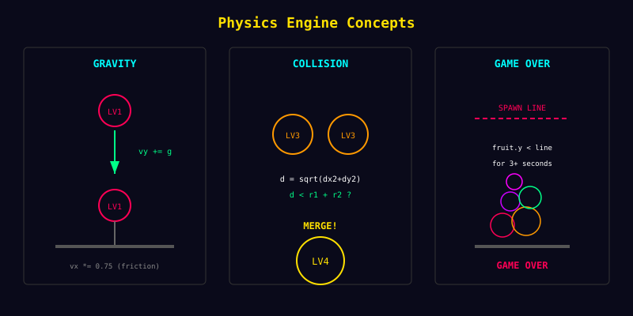

tests
51
초기 단계 Jest 단위 테스트
core
Physics
중력 · 마찰 · 충돌 분리
이 단계의 의미
제가 직접 한 줄 한 줄 구현하지 않았더라도, 무엇을 검증해야 하는지와 어떤 단위로 쪼개야 하는지를 문서로 던졌기 때문에 가능한 결과였습니다.
물리적으로 설명 가능한 게임이 나왔고, 이 단계에서만도 Jest 단위 테스트 51개를 통과했습니다.

제가 직접 한 줄 한 줄 구현하지 않았더라도, 무엇을 검증해야 하는지와 어떤 단위로 쪼개야 하는지를 문서로 던졌기 때문에 가능한 결과였습니다.